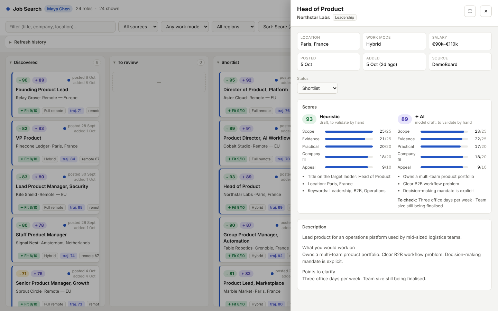

Job Search Workbench
From a noisy job feed to a deliberate application decision.
The tool I run my own job search with. It pulls roles from public applicant-tracking APIs, drops the ones that fail hard criteria, then drafts a score that I validate by hand.
- Explain before automating. Every score shows its five dimensions, its reasons and the points still to check, so the decision stays with me.
- Separate priority from progress. Filters decide what to review; stages record a decision.
- One role, one line. A role published in several countries is merged into a single card.
